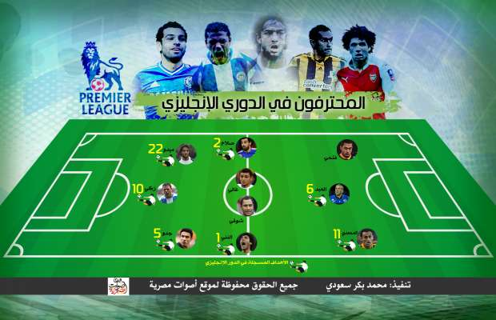

أحدث الأخبار
- الخارجية: مصر تعزي إثيوبيا في ضحايا حادث الإنهيار الأرضي
- الموازنة الجديدة وحل اتحاد الكرة واحتياطي القمح.. أبرز العناوين
- الزمالك يكتسح رينجرز النيجيري بأربعة أهداف مقابل هدف وحيد
- القضاء الإداري يقضي بحل اتحاد الكرة وبطلان الانتخابات الأخيرة
- مقتل 3 أشخاص وإصابة 3 آخرين في حادث مروري بالبحيرة
- وزير الخارجية يجري اتصالاً مع رئيس المجلس الرئاسي الليبي
- عاصمة مصر تتجه لزيادة سكانية نصف مليون العام الجاري
- باولو يقود هجوم الزمالك أمام رينجرز في دوري الأبطال
بالإنفوجراف: 11 مصريا في الدوري الإنجليزي بين النجاح والفشل
يواجه رمضان صبحي، لاعب الأهلي السابق، طريقين في رحلة احترافه، هما النجاح المذهل أو الفشل التام، فانتقاله رسميا إلى فريق ستوك سيتي الإنجليزي، في صفقة قدرت بـ 6 ملايين يورو بات بها أغلى لاعب ينتقل من الدوري المصري إلى خارجه، أعاد إلى الأذهان مسيرة 10 مصريين، ارتدوا قمصان أندية إنجليزية، تراوحت مردوداتهم بين التألق والإخفاق.
وفي هذا التقرير نستعرض مسيرة اللاعبين المصريين العشرة الذين لعبوا لأندية إنجليزية:
ميدو: صاحب التجربة الأولى، قدم أداءً لافتا حين أعير من روما الإيطالي إلى توتنهام في موسم 2005/2006 وسجل مع الفريق هدفين في نصف موسم ثم توهج في الموسم الذي تلاه مسجلا 12 هدفا، ثم اشتراه توتنهام لكنه لم يقدم مردودا جيدا، ليعود ميدو لتألقه مرة أخرى ولكن من بوابة مدلسبره، حيث سجل معه 6 أهداف، إلا أنه خرج معارا لفريق ويجان وسجل معه هدفين فقط، ليصبح رصيد ميدو مع الأندية الإنجليزية 22 هدفا.
عمرو زكي: حين قرر الزمالك إعارته لويجان في موسم 2008/2009، لم يأت بذهن مسئوليه أن مهاجمه سيصبح اللاعب الأبرز في الدوري الأشهر في العالم، فبداية زكي المذهلة بتسجيله 10 أهداف مع فريقه في النصف الأول من الموسم مع ويجان جعلته هدفا لأندية القمة في إنجلترا وخارجها.
وتصدرت صور زكي أغلفة كبرى المجلات والجرائد العالمية، لكن تصرفات زكي أتت لتقضي على ما بناه، بعد عدة وقائع أبرز فيها زكي عدم التزامه بالعودة إلى ناديه أكثر من مرة بعد انتهاء مباريات المنتخب القومي، فاضطر للعودة سريعا إلى نادي الزمالك. وفي عام 2010 حاول زكي العودة مرة أخرى للدوري الإنجليزي من بوابة هال سيتي، لكنه لم يقدم مردودا جيدا، ولم يسجل أي أهداف.
حسام غالي: تعاقد حسام غالي في عام 2006 مع فريق توتنهام قادما من فينورد الهولندي، وسجل هدفا وحيدا مع فريقه أمام تشيلسي، لكن أزمة كبيرة نشبت بين غالي وجماهير توتنهام، حين ألقى غالي بقميص فريقه على أرض الملعب، ما أثار حفيظة الجماهير رافضة اشتراكه في أي مباراة للفريق.
وخرج غالي معارا لفريق ديربي كاونتي في عام 2008، إلا أن الفريق هبط إلى دوري الدرجة الثانية، ليخرج غالي من الدوري الإنجليزي صوب فريق النصر في الدوري السعودي.
أحمد المحمدي: يمتلك المحمدي أطول مسيرة بين اللاعبين المصريين في الدوري الإنجليزي حتى الآن، إذ مثّل لاعب إنبي السابق فريقين في إنجلترا لمدة 7 مواسم، ويستعد هذا الموسم مع فريقه هال سيتي للعودة لدوري الدرجة الأولى "بيميرليج".
وبدأ المحمدي مسيرته مع فريق سندرلاند قادما من إنبي على سبيل الإعارة، في موسم 2010/2011، ثم اشتراه سندرلاند، في الموسم الذي تلاه، وأعاره في موسم 2012/2013 إلى فريق هال سيتي الذي اشتراه فيما بعد ليصبح أحد أهم لاعبيه حتى الآن. سجل المحمدي مع سندرلاند هدفا واحدا، ومع هال سيتي 10 أهداف.
محمد ناجي جدو: يتذكر جمهور نادي هال سيتي محمد ناجي جدو بالخير إذ ساهم جدو في تأهل فريقه إلى دوري الدرجة الأولى من الدوري الإنجليزي الممتاز، وتسجيله لـ 5 أهداف، لكن إصابته وضعت حدا لمشواره مع النمور ليعود مرة أخرى للنادي الأهلي في عام 2014.
آدم العبد: ولد لأب مصري وأم بريطانية، ولعب في عدة أندية إنجليزية أبرزها فريق برايتون الإنجليزي، ومكث فيه 11 عاما، ولعب لبريستول سيتي عامين من 2014 إلى 2016، وخرج في إعارات لعدة أندية في الدرجة الأدنى في إنجلترا، ويمتلك في رصيده 6 أهداف.
محمد شوقي: لعب شوقي في مدلسبره قادما من النادي الأهلي، وزامل ميدو في الفريق، لكنه ظل مع الفريق لثلاثة مواسم لم يسجل فيها أي هدف.
أحمد فتحي: رحلتان لفتحي إلى مدينة الضباب لم يكتب لهما النجاح، الأولى خرج فيها من النادي الإسماعيلي صوب فريق شيفلد يونايتد، إلا أن اللاعب الشاب لم يتكيف مع الأجواء هناك، وتعاقد مع النادي الأهلي في مصر، أما الرحلة الثانية فقضاها من بوابة الأهلي في إعارة برفقة زميله جدو، في هال سيتي ولم يشارك فيها بشكل أساسي، وعاد مرة أخرى لنادي القرن في أفريقيا.
محمد صلاح: جاء صلاح إلى إنجلترا لينتقل إلى فريق ليفربول، لكن عيون البرتغالي جوزيه مورينيو التقطت صانع الألعاب الشاب ليبدأ مع تشيلسي مسيرة جديدة، إلا أن المسيرة لم يكتب لها سوى موسم واحد، لم يفارق فيه صلاح "دكة" الاحتياط إلا نادرا، فقررت إدارة تشيلسي إعارة صلاح إلى فورنتينا الإيطالي، ومنذ ذلك الحين لم يدخل صلاح إلى النادي اللندني، الذي باع عقد اللاعب إلى فريق روما هذا الصيف.
صلاح سجل هدفين في ظهوره القليل مع البلوز، وهو المصري الوحيد في التاريخ الذي حقق بطولة الدوري الإنجليزي الممتاز، حيث كان لاعبا في النصف الأول من بطولة الدوري.
النني: انضم إلى فريق أرسنال في يناير هذا العام قادما من بازل، ولم ينجح النني في تسجيل أي أهداف في الدوري الإنجليزي حتى الآن، لكنه سجل هدفا رائعا في مرمى برشلونة بدوري أبطال أوروبا.

إنفو جراف - المحترفون في الدوري الإنجليزي


{kind=link}
تعليقات الفيسبوك